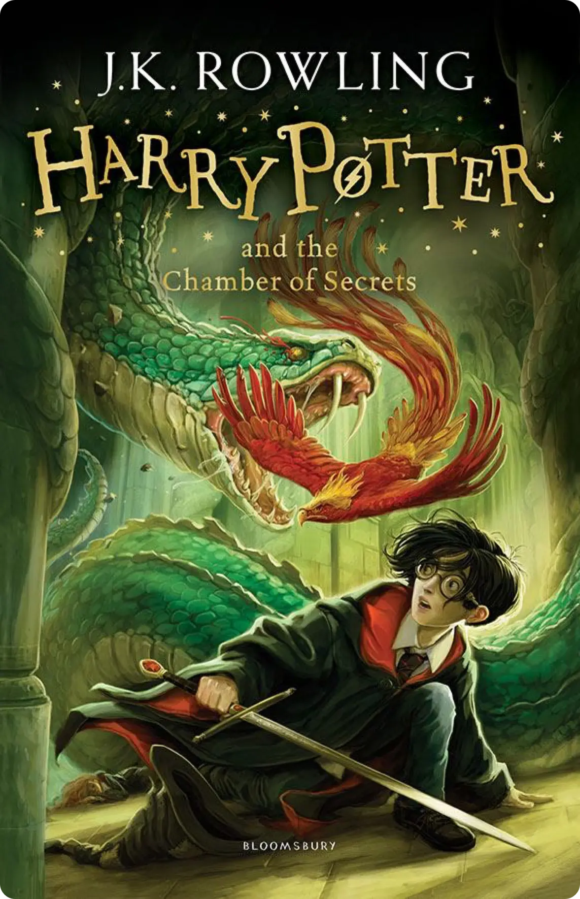

Harry Potter is a series of seven fantasy novels written by British author J. K. Rowling. The novels chronicle the lives of a young wizard, Harry Potter, and his friends Hermione Granger and Ron Weasley, all of whom are students at Hogwarts School of Witchcraft and Wizardry. The main story arc concerns Harry's struggle against Lord Voldemort, a dark wizard who intends to become immortal, overthrow the wizard governing body known as the Ministry of Magic and subjugate all wizards and Muggles (non-magical people).
Since the release of the first novel, Harry Potter and the Philosopher's Stone, on 26 June 1997, the books have found immense popularity, positive reviews, and commercial success worldwide. They have attracted a wide adult audience as well as younger readers and are often considered cornerstones of modern young adult literature.[2] As of February 2018, the books have sold more than 500 million copies worldwide, making them the best-selling book series in history, and have been translated into eighty languages.[3] The last four books consecutively set records as the fastest-selling books in history, with the final installment selling roughly eleven million copies in the United States within twenty-four hours of its release.
The series was originally published in English by two major publishers, Bloomsbury in the United Kingdom and Scholastic Press in the United States. A play, Harry Potter and the Cursed Child, based on a story co-written by Rowling, premiered in London on 30 July 2016 at the Palace Theatre, and its script was published by Little, Brown. The original seven books were adapted into an eight-part namesake film series by Warner Bros. Pictures, which is the third highest-grossing film series of all time as of February 2020. In 2016, the total value of the Harry Potter franchise was estimated at $25 billion,[4] making Harry Potter one of the highest-grossing media franchises of all time.
A series of many genres, including fantasy, drama, coming of age, and the British school story (which includes elements of mystery, thriller, adventure, horror, and romance), the world of Harry Potter explores numerous themes and includes many cultural meanings and references.[5] According to Rowling, the main theme is death.[6] Other major themes in the series include prejudice, corruption, and madness.[7]
The success of the books and films has allowed the Harry Potter franchise to expand with numerous derivative works, a travelling exhibition that premiered in Chicago in 2009, a studio tour in London that opened in 2012, a digital platform on which J. K. Rowling updates the series with new information and insight, and a pentalogy of spin-off films premiering in November 2016 with Fantastic Beasts and Where to Find Them, among many other developments. Most recently, themed attractions, collectively known as The Wizarding World of Harry Potter, have been built at several Universal Parks & Resorts amusement parks around the world.

Harry Potter has never even heard of Hogwarts when the letters start dropping on the doormat at number four, Privet Drive. Addressed in green ink on yellowish parchment with a purple seal, they are swiftly confiscated by his grisly aunt and uncle. Then, on Harry’s eleventh birthday, a great beetle-eyed giant of a man called Rubeus Hagrid bursts in with some astonishing news: Harry Potter is a wizard, and he has a place at Hogwarts School of Witchcraft and Wizardry. An incredible adventure is about to begin!

Harry Potter’s summer has included the worst birthday ever, doomy warnings from a house-elf called Dobby, and rescue from the Dursleys by his friend Ron Weasley in a magical flying car! Back at Hogwarts School of Witchcraft And Wizardry for his second year, Harry hears strange whispers echo through empty corridors – and then the attacks start. Students are found as though turned to stone … Dobby’s sinister predictions seem to be coming true.

When the Knight Bus crashes through the darkness and screeches to a halt in front of him, it’s the start of another far from ordinary year at Hogwarts for Harry Potter. Sirius Black, escaped mass-murderer and follower of Lord Voldemort, is on the run – and they say he is coming after Harry. In his first ever Divination class, Professor Trelawney sees an omen of death in Harry’s tea leaves... But perhaps most terrifying of all are the Dementors patrolling the school grounds, with their soul-sucking kiss.
The Triwizard Tournament is to be held at Hogwarts. Only wizards who are over seventeen are allowed to enter – but that doesn’t stop Harry dreaming that he will win the competition. Then at Hallowe’en, when the Goblet of Fire makes its selection, Harry is amazed to find his name is one of those that the magical cup picks out. He will face death-defying tasks, dragons and Dark wizards, but with the help of his best friends, Ron and Hermione, he might just make it through – alive!
Dark times have come to Hogwarts. After the Dementors’ attack on his cousin Dudley, Harry Potter knows that Voldemort will stop at nothing to find him. There are many who deny the Dark Lord’s return, but Harry is not alone: a secret Order gathers at Grimmauld Place to fight against the Dark forces. Harry must allow Professor Snape to teach him how to protect himself from Voldemort’s savage assaults on his mind. But they are growing stronger by the day and Harry is running out of time.
When Dumbledore arrives at Privet Drive one summer night to collect Harry Potter, his wand hand is blackened and shrivelled, but he does not reveal why. Secrets and suspicion are spreading through the wizarding world, and Hogwarts itself is not safe. Harry is convinced that Malfoy bears the Dark Mark: there is a Death Eater amongst them. Harry will need powerful magic and true friends as he explores Voldemort’s darkest secrets, and Dumbledore prepares him to face his destiny.
As he climbs into the sidecar of Hagrid’s motorbike and takes to the skies, leaving Privet Drive for the last time, Harry Potter knows that Lord Voldemort and the Death Eaters are not far behind. The protective charm that has kept Harry safe until now is broken, but he cannot keep hiding. The Dark Lord is breathing fear into everything Harry loves, and to stop him Harry will have to find and destroy the remaining Horcruxes. The final battle must begin – Harry must stand and face his enemy.

The official playscript of the original West End production of Harry Potter and the Cursed Child. It was always difficult being Harry Potter and it isn’t much easier now that he is an overworked employee of the Ministry of Magic, a husband, and father of three school-age children. While Harry grapples with a past that refuses to stay where it belongs, his youngest son Albus must struggle with the weight of a family legacy he never wanted. As past and present fuse ominously, both father and son learn the uncomfortable truth: sometimes, darkness comes from unexpected places.